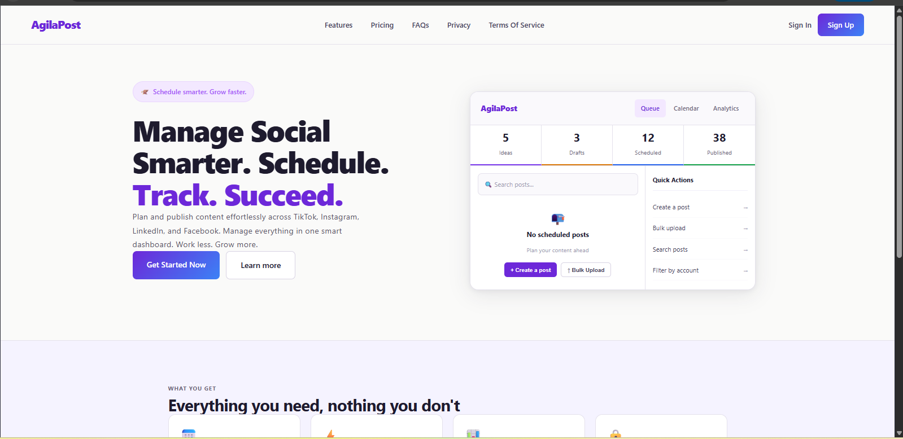

AgilaPost: social media scheduler
A full-stack app for planning and scheduling posts across platforms.
- Built the calendar, scheduling, and category filter components for managing posts.
- Implemented a TikTok OAuth 2.0 login flow and researched the Meta Graph API and LinkedIn API.
- Worked with teammates through GitHub branches and deployed the backend on Render.
